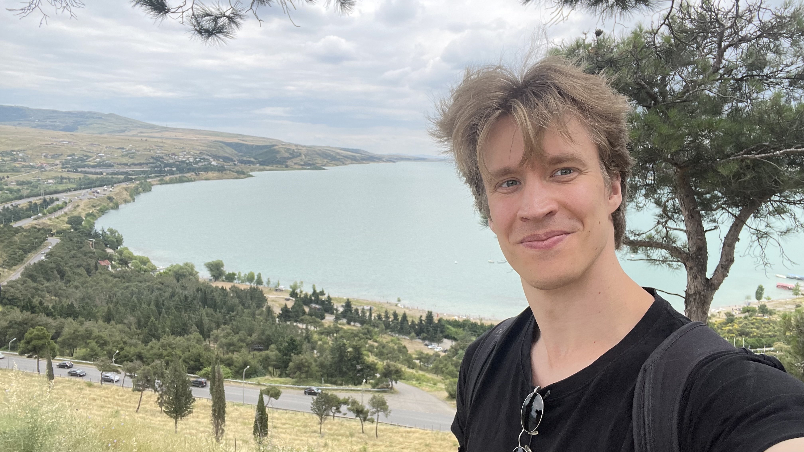
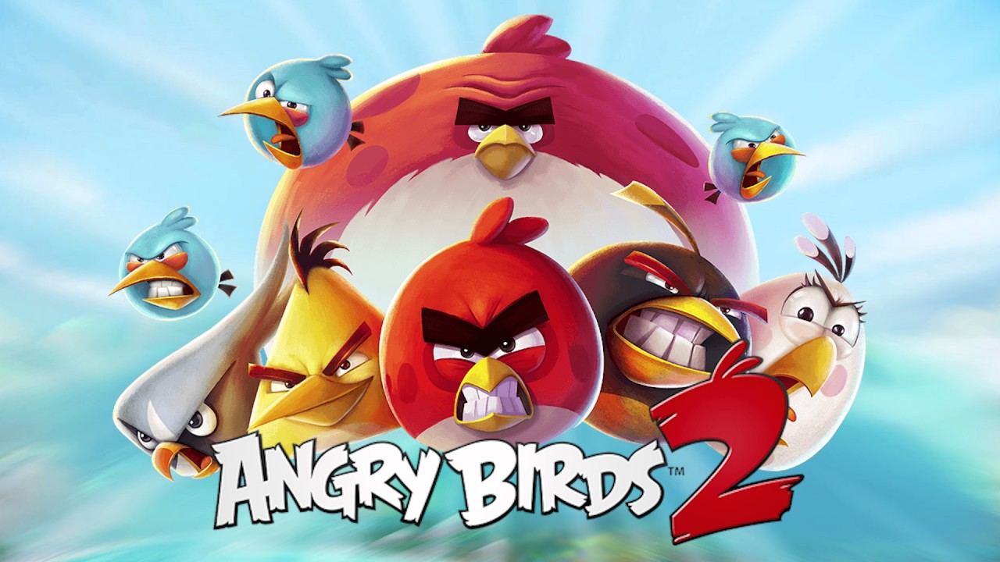

I’m Gustaf – Game Producer turned Game Programmer with a passion for creating unique experiences. As a second year student at The Game Assembly in Stockholm I’m looking for a 6 month internship starting this fall.
I deeply care about the games I work on and find the most satisfaction improving whatever feels most lacking from playing. I see myself best utilized and happy in a Gameplay Programmering role where I work in close collaboration with other disciplines and focus on my biggest love in games – mechanics.
From Producer to Programmer
A couple of years I realized that in order to be content, I needed to create. I wanted to be hands on and contribute more directly than I did as a producer. It quickly felt clear that – with my fondness for logic, systems and understanding – I wanted to work as a game programmer. This clarity led me to resign and immediately start working toward my dream.
My work as a Producer
Angry Birds 2 (2017- 2021)

In 2017 I began working as a Producer at Rovio Stockholm, doing live-ops and development of new updates on Angry Birds 2.
From the start of 2019 until my departure I was the only producer on the ~30 person project. My responsibilies of process, team growth and delivery of updates.
Fellowship (2021- 2022)

In 2021 I started as a Producer at Chief Rebel. I had similar responsibilities, but this time on the new game in production Fellowship. I was the only producer on the project that had a team size of around 40 people at the time of my departure.